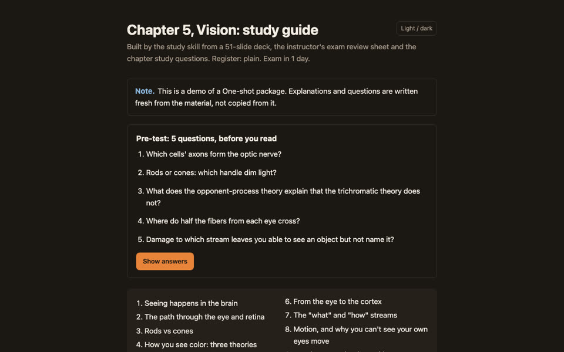
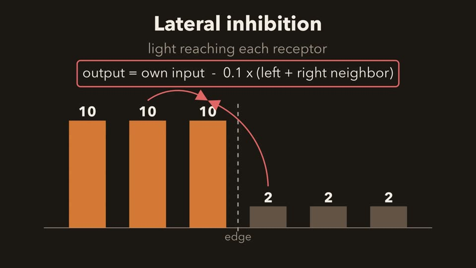
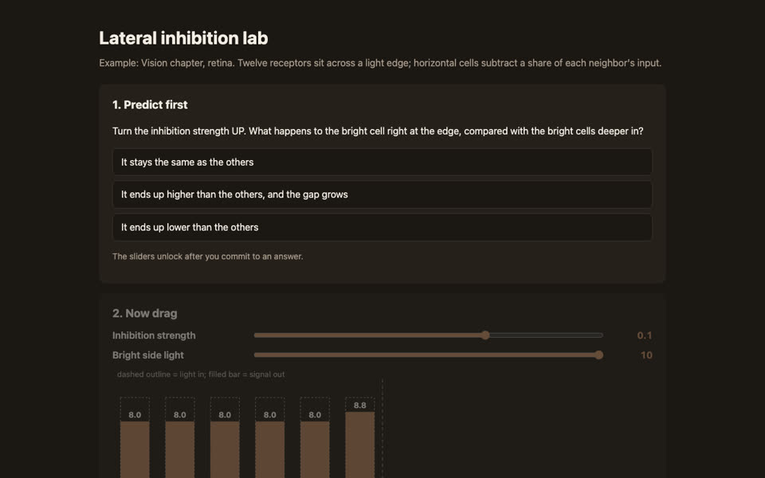

study
An Agent Skill that studies your actual course material the way your instructor tests it, then either drills you or hands you a finished study package. Below is one session on one real chapter: Vision, from a neuroscience course, the day before the exam.
git clone https://github.com/sa1emie/study-skill.git cp -r study-skill/study ~/.claude/skills/
The terminal transcripts are illustrative, written to show how the skill behaves. The files in step 5 are real outputs, built from the chapter. Source on GitHub.
Drop in what you have
Slides, a review sheet, study questions, lecture transcripts, past exams. Anything goes in raw/, and it is never edited. You say one sentence.
~/study/brain-behavior/raw/ Chapter 5 - Vision.pptx Exam 2 Study Guide.docx Study Questions ch 5-6.pptx > exam tomorrow at 9, here's the vision chapter
It reads once and tells you what it found
Each source is classified: a review sheet carries far more signal about the exam than a slide deck. Every claim about what the instructor emphasizes is tagged with its evidence, and gaps are named instead of filled with guesses.
study 3 sources: slides (51), review sheet (33 Vision items), study questions (assessment-like). 9 sections; yield set by the 33 review-sheet items, not by guesswork. Item patterns: empty, no past exams to model on. Gap: 1 review item is not on the slides (photoreceptors in the dark); taught as supplement. Slide 49 uses "saccades" for saccadic suppression; flagged, both terms taught. How do you want to use this? Companion I drill you and adapt as you go. One-shot I build a full study package you use on your own.
Companion: a pre-test, then drilling that never leads with the answer
Five quick questions measure where you start. Then it asks before it explains, makes you be precise, and explains the mechanism after a miss.
study Pre-test 1/5. Which cells' axons form the optic nerve? you bipolar cells study Pre-test 2/5. Rods or cones for dim light, and where? you cones, in the middle ... study Pre-test: 2/5. Starting with rods vs cones. Night vision is rods, in the periphery. Why is peripheral vision good in dim light but blurry? you more rods? study Closer, but vague. Many rods share ONE ganglion cell: their signals add up (sensitive) but the brain cannot tell which rod fired (blurry). So what does the fovea do differently? you one cone per ganglion cell study Hit. That is why reading uses the fovea.
Explanations at your level
Say "too complicated" or "I just need to pass" and the explanations switch to plain words, one analogy and the exam cue. The mechanism is still there, behind a toggle. The quizzing does not stop.
you too complicated, simpler study When one receptor gets stimulated, it tells its neighbors to quiet down, like a crowd where everyone shushes the people next to them. That's lateral inhibition, done by horizontal cells. Result: edges look sharper. If the question says "enhances contrast at borders", the answer is lateral inhibition. Your turn: which cells do the shushing?
One-shot: a package you use with the AI closed
Sized to the time left. Every page opens with a pre-test and ends with a post-test, every video ends in questions, and every simulation makes you predict before you can drag. These are the real files.

Study guide9 sections, cue tables, hidden answers, flashcards, pre and post tests.
Explainer video, 97 sAnimated and narrated locally, no API key. Ends in 5 questions. DiagramThe visual pathway, color-coded by visual field.
DiagramThe visual pathway, color-coded by visual field.

Predict, then dragCommit to a prediction, then move the inhibition strength and watch the edge. Locked until you guess.It closes the loop and schedules the next review
A post-test shows whether the session actually moved anything. Reviews are spaced, and getting an advanced concept right gives partial credit to its prerequisites, so you review less and cover more.
study Pre/post: 2/5 -> 4/5 (+40 pts) Drilled: 6 concepts, 9 hits, 3 misses Weak: color theories, saccadic suppression Due next: color theories tomorrow (also covers cone types, opponent pairs) Next session: 10 min, interleaved review before 9:00
Get it
Works in Claude Code as a skill, in Codex, Cursor and other agents through a single study.md, and in a plain chat by uploading that file.
git clone https://github.com/sa1emie/study-skill.git cp -r study-skill/study ~/.claude/skills/ # then: "here are my slides, exam is Friday"
Other tools, the optional video setup, and configuration: README.